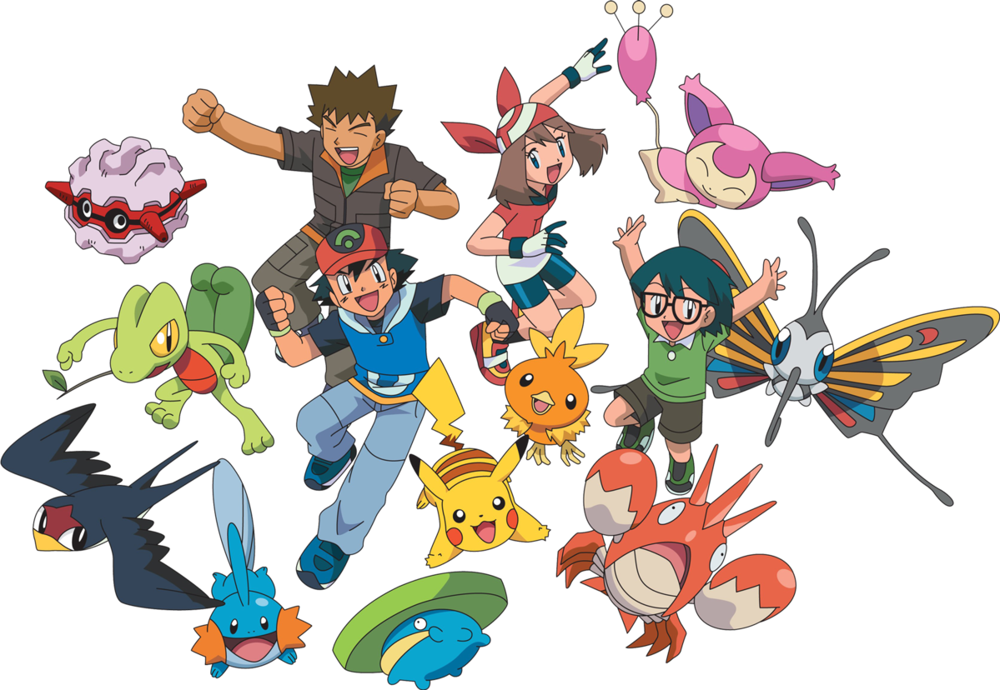
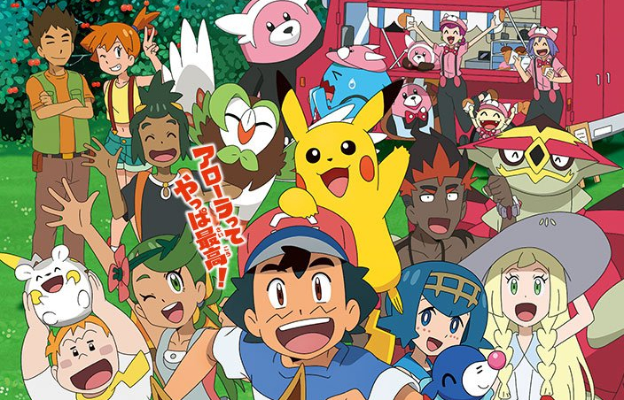

Pokémon TV series
Original series (1997–2002)
Ash Ketchum is 10 years old and lives in Pallet town, he is ready to start his journey in the world of Pokémon and dreams of becoming a Pokémon master, but on the day he is to receive his first Pokémon, Ash oversleeps and wakes up in a panic, running into Gary Oak, who becomes Ash's rival. Professor Oak, the local Pokémon researcher, has already given away the three Pokémon (Bulbasaur, Charmander, and Squirtle) he entrusts to new Pokémon Trainers when Ash finally reaches Oak's Lab. The only Pokémon that he has left is a Pikachu, which he gives to Ash. Determined to make it on his journey, Ash does his best to befriend Pikachu, but it refuses to trust him and chooses to stay out of the Poké Ball, even attacking Ash with its electric powers. It is only after Ash protects Pikachu from an angry group of Spearows that Pikachu realizes how much Ash cares. Ash Ketchum has the Thunder Stone, and he wants Pikachu to evolve into Raichu, but Pikachu refuses to evolve.
Advanced Generation (2002–2006)
Brock follows Ash to Hoenn and Ash gains two new companions, a Pokémon Coordinator May and her younger brother Max. Together, they go on another adventure. May collects five ribbons to participate in the Hoenn Grand Festival, the Kanto Grand Festival, and the Johto Grand Festival, but she loses to Drew in the Hoenn Grand Festival, placing her in the Top 8, and Robert takes the Hoenn Grand Festival Ribbon Cup. Then, she loses to Solidad in the Kanto Grand Festival, placing her in the Top 4, and Solidad takes the Kanto Grand Festival Ribbon Cup. Misty returns and later releases her Togepi, which has evolved to Togetic. Ash defeats all eight Hoenn gym leaders and participates in the Ever Grande Conference, but he loses to Tyson, in the quarterfinals, placing him in the Top 8. Tyson becomes the Winner in the Ever Grande Conference.
Diamond and Pearl (2006–2010)
Upon arrival in Sinnoh, Ash and Brock meet Dawn, another Pokémon Coordinator, who travels with them as they go through the Sinnoh region in another adventure. Dawn earns five ribbons to participate in the Sinnoh Grand Festival. There, Dawn loses to Zoey, placing her second, and Zoey takes the Sinnoh Grand Festival Ribbon Cup. Ash defeats all eight Sinnoh gym leaders to participate in the Lily of the Valley Conference, but he loses to Tobias, in the semifinals, placing him in the Top 4.
Black & White (2010–2013)
Afterwards, Ash, his mother Delia and Professor Oak take a holiday to the far-off Unova Region, where he meets and travels with would-be Dragon Master Iris and Striaton City Gym Leader, Pokémon Connoisseur, and sometimes detective Cilan. After winning all eight Unova badges and thwarting the sinister Team Plasma, Ash, Iris, and Cilan travel throughout the eastern side of Unova to prepare for the Vertress Conference, but Ash loses to Cameron, in the quarterfinals, placing him in the Top 8. But also, Cameron loses to Virgil in the semifinals, placing him in the Top 4. Afterwards, Ash, Iris, and Cilan travel through the Decolore Islands before Ash makes his way back to Pallet Town and meets the investigative reporter Alexa, who is from the distant Kalos Region. Having arrived back in Kanto, Iris and Cilan travel to Johto whilst Ash and Alexa head to Kalos.
XY (2013–2016)
Ash and Alexa arrive in the Kalos region and Ash is itching to get started in earning his Gym badges. But after Alexa informs Ash that her sister, a Gym Leader, is currently absent, Ash travels to Lumiose City where he meets boy-genius Clemont and his younger sister Bonnie, unaware that Clemont is, in fact, Lumiose City's Gym Leader; a fact he tries his best to hide. Ash also reunites with Serena, a girl from Vaniville Town whom Ash had met in his childhood. Serena earns three keys to participate in the Pokémon Showcase. Serena loses to Aria, placing her runner-up. After traveling with Serena, Clemont, and Bonnie to prepare for the Lumiose Conference by defeating all eight Kalos gym leaders, Ash competes and advances all the way to the finals, where he loses to Alain, placing him runner-up. Alain was a temporary member of the evil Team Flare due to them misleading him. Once he discovers their true intentions, Alain reforms and joins Ash and his friends to stop Team Flare's plans. Bidding farewell to his friends in Kalos, Ash once again returns to Pallet Town.
Sun & Moon (2016–2019)
In Pokémon the Series: Sun & Moon, Ash, Delia and her Mr. Mime are on vacation in the Alola region when Ash has an encounter with Tapu Koko, the guardian Pokémon of Melemele Island, who presents him with the Z-Ring, a device that, when paired with a special crystal, allows a Pokémon to unleash a powerful move when synchronized with its trainer. This leads him to stay in Alola and enroll at the local Pokémon school. When he decides to undertake the trials necessary to master the power of the Z-Ring, Ash's new classmates Lana, Mallow, Lillie, Sophocles and Kiawe decide to accompany him. Ash takes part in the island challenges, and finally gains his first official league victory at the Manalo Conference.
Journeys (2019–present)

The ongoing series, Pokémon Journeys: The Series travels through all eight regions, including Galar, the setting of the Pokémon Sword and Shield games. Pikachu's backstory as a Pichu, Ash's story of when he was 6 years old missing Professor Oak's camp, Goh's backstory when he was 6 years old and attended Professor Oak's camp and saw a Mew, are all told. It sees Ash and Pikachu travel to each of the regions, accompanied by Goh and his Scorbunny, which later evolves into Raboot and then into a Cinderace. Currently, the supporting cast includes a girl named Chloe Cerise, who is close to her father's Yamper. The next season, Pokémon Master Journeys: The Series, is streaming. Ash's team consists of Pikachu, Dragonite, Gengar, Lucario, Sirfetch'd and Dracovish. Chloe joins Ash and Goh on their adventure with her newly caught Eevee, who is incapable of evolving. One theory of her inability, is that she is hesitant on what path to take.